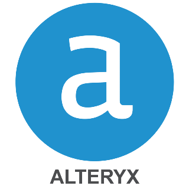
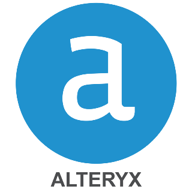

Hello There!
Welcome to my Portfolio! Here's where I turn numbers into narratives. Think of me as a translator, taking the complex language of data and turning it into clear, actionable insights. It's like a puzzle where each piece is a stat or figure, and when put together, they reveal the bigger picture. This isn't just about charts and graphs; it's about finding the story they're trying to tell and using it to make smart, real-world decisions. Dive in, and let's explore how data can do much more than just sit on a spreadsheet!

Experience
2+ years
Data Analytics

Education
B.Sc. Economics
M.Sc. Finance
I'm Daniil, an ML/AI enthusiast and USC Finance graduate, specializing in data analysis and coding for industry transformation. My IT background has enabled me to create solutions that optimize business operations. Key achievements include launching a predictive customer scoring model for enhanced trading experiences and developing an automated portfolio management system using advanced machine learning techniques like PCA and Hierarchical Risk Parity. My focus is on leveraging technology and data for smarter decision-making and business innovation.


 
